방수산업기사 (2013-08-18 기출문제)
1과목: 방수일반
1. 사질토 연약지반에 대한 지반 개량 공법으로 옳지 않은 것은?
- 약액 주입 공법
- 프리 로딩 공법
- 샌드 컴팩션 파일 공법
- 바이브로 플로테이션 공법
(정답률: 50%)

2. 소음·진동관리법령에 따른 소음발생건설기계의 종류에 속하지 않는 것은?
- 천공기
- 향타 및 향발기
- 실내용 발전기
- 콘크리트 절단기
(정답률: 73%)
3. 커튼월 공사에서 실물 모형 실험(Mock-up test)의 시험 종목에 속하지 않는 것은?
- 기밀시험
- 구조시험
- 내화시험
- 정압수밀시험
(정답률: 알수없음)
4. 버드(Bird)의 재해발생 이론의 구성에 속하지 않는 것은?
- 사고
- 통제부족
- 기본원인
- 개인적 결함
(정답률: 알수없음)
5. 물의 영향에 의하여 발생되는 구조물의 마감재 박리 및 부풀음 하자 현상에 관한 설명으로 옳지 않은 것은?
- 바탕재에 함유된 수증기의 발산으로 발생된다.
- 콘크리트 이어치기 부분에서 가장 많이 발생한다.
- 충분히 건조되지 못한 바탕에서 시공 전 후에 발생된다.
- 지면과 접해 있는 바닥면에서의 습기의 상승으로 발생된다.
(정답률: 64%)
6. 철근콘크리트 구조에 관한 설명으로 옳지 않은 것은?
- 내화·내구적이다.
- 형태를 자유롭게 구성할 수 있다.
- 건식 구조로 겨울철 공사가 용이하다.
- 균열 발생이 쉽고 국부저긍로 파손되는 경우가 많다.
(정답률: 알수없음)
7. 다음은 평면 표시 기호 중 여닫이문을 나탄낸 것은?
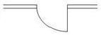
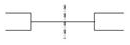
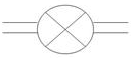
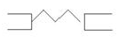
(정답률: 60%)
8. 건축구조의 구성양식에 의한 분류에 속하지 않는 것은?
- 조립식 구조
- 가구식 구조
- 조적식 구조
- 일체식 구조
(정답률: 40%)
9. 지반 위에 있는 콘크리트 바닥판이 수축에 의하여 표면에 균열이 생기는 것을 방지하기 위하여 설치하는 것은?
- 시공줄눈
- 조절줄눈
- 치장줄눈
- 콜드조인트
(정답률: 62%)
10. 작업조건과 착용하여야 하는 보호구의 연결이 옳지 않은 것은?
- 감전의 위험이 있는 작업 : 안전대
- 물체가 흩날릴 위험이 있는 작업 : 보안경
- 근로자가 추락할 위험이 있는 작업 : 안전모
- 용접 시 불꽃이나 물체가 흩날릴 위험이 있는 작업 : 보안면
(정답률: 73%)
11. 홈통에 관한 설명으로 옳지 않은 것은?
- 처마홈통과 선홈통을 연결하는 경사홈통을 깔대기 홈통이라 한다.
- 처마 끝에 수평으로 설치하여 빗물을 받는 홈통을 처마 홈통이라 한다.
- 처마홈통에서 내려오는 빗물을 지상으로 유도하는 수칙 홈통을 선홈통이라 한다.
- 두 개의 지붕면이 만나는 자리 또는 지붕면과 벽면이 만나는 수평지붕골에 쓰이는 홈통을 장식홈통이라 한다.
(정답률: 73%)
12. 다음 설명에 알맞은 콘크리트 규열보수공법은?
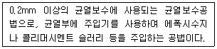
- 충전공법
- 주입공법
- 다면복구공법
- 표면처리 공법
(정답률: 73%)
13. 콘크리트가 대기 중의 탄산가스 또는 아황산가스와 접촉하여 서서히 탄산칼슘이 생성되면서 pH가 10이하로 저하하는 탄산화반응을 의미하는 것은?
- 염해
- 중성화
- 크리프
- 알칼리-골재반응
(정답률: 82%)
14. 산업안전보건법령에 따른 중대재해에 속하지 않는 것은?
- 사망자가 1명이상 발생한 재해
- 부상자가 동시에 5명이상 발생한 재해
- 직업성질병자가 동시에 10명이상 발생한 재해
- 3개월 이상의 요양이 필요한 부상자가 동시에 2명이상 발생한 재해
(정답률: 30%)
15. 콘크리트가 타설된 후 비교적 가벼운 물이나 미세한 물질등이 상승하고, 무거운 골재나 시멘트는 침하하는 현상은?
- 블리딩
- 동결융해
- 레이턴스
- 컨시스턴스
(정답률: 84%)
16. 산업재해가 발생되는 직접원인은 불안전한 상태와 불안전한 행동으로 나눌 수 있다. 다음 중 불안전한 행동에 속하지 않는 것은?
- 위험장소 접근
- 보호구의 잘못 사용
- 불안전한 상태 방치
- 안전방화장치의 결함
(정답률: 70%)
17. 벽돌조 벽 하부에 바닥의 습기가 상부로 흐르는 것을 방지하기 위하여 설치하는 것은?
- 방수턱
- 방습층
- 펀칭메탈
- 닫힌줄눈
(정답률: 알수없음)
18. 점토벽돌벽의 백화를 방지하기 위한 방법으로 옳지 않은 것은?
- 파라핀 도료를 사용한다.
- 벽돌면 상부에 빗물막이를 설치한다.
- 줄눈에 빗물이 스며들지 않도록 방수제를 혼입한다.
- 양질의 모르타르와 15%이상의 흡수율을 가진 벽돌을 사용한다.
(정답률: 알수없음)
19. 건축제도의 글자 및 지수에 관한 설명으로 옳지 않은 것은?
- 숫자는 아라비아 숫자를 원칙으로 한다.
- 치수는 특별히 명시하지 않는 한, 마무리 치수로 표시한다.
- 글자체는 수직 또는 15°경사의 고딕체로 쓰는 것을 원칙으로 한다.
- 치수는 치수선에 평행하게 도면의 오른쪽에서 왼쪽으로 읽을 수 있도록 기입한다.
(정답률: 70%)
20. 건축 도면 중 배치도에 표시할 사항에 속하지 않는 것은?
- 방위
- 부지의 고저
- 인접도로의 폭
- 각 실의 바닥 구조
(정답률: 알수없음)
2과목: 방수재료
21. 방수공사용 1종 아스팔트의 연화점은 최소 얼마 이상인가?
- 65℃
- 75℃
- 85℃
- 95℃
(정답률: 알수없음)
22. 합성고분자계 방수시트 중 가황고무계 시트의 주원료에 속하지 않는 것은?
- 부틸고무
- 염화비닐 수지
- 에틸렌프로필렌 고무
- 클로로술폰화 폴리에틸렌
(정답률: 알수없음)
23. 지하구체 외면방수에 사용하는 방수 재료가 갖춰야 할 요건과 가장 거리가 먼 것은?
- 재료 경량성
- 시공 용이성
- 시공 품질의 안정성
- 결함부의 처리 용이성
(정답률: 50%)
24. 건축물의 각종 줄눈에 충전하여 수밀성, 기밀성, 차음성을 확보하는 방수재료는?
- 실링재
- 증점제
- 테라코타
- 플라이애시
(정답률: 알수없음)
25. 합성고분자계 균질시트의 품질시험 항목에 속하지 않는 것은?
- 인장성능
- 접합 성상
- 온도 의존성
- 흘러내림 저항성능
(정답률: 46%)
26. 방수 공사용 아스팔트의 품질시험 항목에 속하지 않는 것은?
- 연화점
- 침입도
- 취화점
- 인장강도
(정답률: 60%)
27. 다음 중 천연아스팔트에 속하지 않은 것은?
- 아스팔타이트
- 블론 아스팔트
- 로크 아스팔트
- 레이크 아스팔트
(정답률: 알수없음)
28. 개량 아스팔트 방수 시트의 품질 기준 중 제품을 평면으로 펼쳐서 관찰한 겉모양에 관한 설명으로 옳지 않은 것은?
- 끝부분의 절단선이 길이 방향에 대해서 거의 직각으로 되어 있어야 한다.
- 표층의 일부가 결손 또는 보강재와 적충한 재료 사이에 박리된 부분이 없어야 한다.
- 1롤의 길이가 8.0m 이상인 경우, 1롤 도중에서 최소 3곳 이상 절단되어 있지 않아야 한다.
- 1롤 길이가 8.0m이상이고 1롤 도중에서 1곳이 절단되어 있는 경우, 한편의 길이는 2.0m 이상이어야 한다.
(정답률: 55%)
29. 옥상부위에 적용되는 방수재료가 아닌 것은?
- 우레탄 도막 방수재
- 벤토나이트 시트 방수재
- 합성고분자계 시트 방수재
- 개량 아스팔트 시트 방수재
(정답률: 67%)
30. 다음 설명에 알맞은 지붕 방수재료의 요구 성능은?
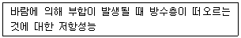
- 수밀성
- 내풍압성
- 내충격성
- 유지관리성
(정답률: 64%)
31. 멤브레인 방수층 성능 평가 시험의 종류 중 시트계 방수층에만 적용하고 도막계 방수층에는 적용하지 않는 시험은?
- 패임 저항성 시험
- 충격 저항성 시험
- 처짐 저항성 시험
- 풍압 저항성 시험
(정답률: 알수없음)
32. 합성 고분자계 균질시트의 인열 성능 시험 결과가 다음과 같을 때 인열 강도는?
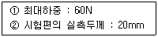
- 15N/mm
- 30N/mm
- 60N/mm
- 120N/mm
(정답률: 알수없음)
33. 시멘트 액체형 방수재의 응결시간에 대한 성능기준으로 옳은 것은?
- 초결이 30분 이상, 종결은 10시간 이내에 일어날 것.
- 초결이 30분 이상, 종결은 15시간 이내에 일어날 것.
- 초결이 1시간 이상, 종결은 10시간 이내에 일어날 것.
- 초결이 1시간 이상, 종결은 15시간 이내에 일어날 것.
(정답률: 알수없음)
34. 방수재료의 시험 항목 중 부착성능 시험의 목적으로 옳은 것은?
- 방수재의 찢으려는 힘에 대한 저항 성능을 알아보기 위함이다.
- 저온환경에서의 방수재가 접혀 손상되는지 유무를 알아보기 위함이다.
- 바탕면과 방수층간의 부착상태에 대한 발기저항성을 알아보기 위함이다.
- 외부로부터 발생될 수 있는 충격에 대한 방수층의 손상 유무를 알아보기 위함이다.
(정답률: 46%)
35. 아스팔트 펠트 제품의 종류에 속하지 않는 것은?
- 340품
- 440품
- 540품
- 650품
(정답률: 60%)
36. 건설용 도막 방수재에 속하지 않는 것은?
- 우레탄 고무계
- 아크릴 고무계
- 에틸렌 고무계
- 고무 아스팔트계
(정답률: 10%)
37. 천연의 유기섬유를 원료로 한 원지에 스트레이트 아스팔트를 함침시켜 만든 방수재료는?
- 아스팔트 루핑
- 아스팔트 펠트
- 아스팔트 컴파운드
- 아스팔트 프라이머
(정답률: 59%)
38. 규산질계 분말형 도포방수재의 품질시험 항목에 속하지 않는 것은?
- 흡수량
- 인열강도
- 압축강도
- 내잔갈림성
(정답률: 알수없음)
39. 다음 설명에 알맞은 방수 공사용 아스팔트의 종류는?
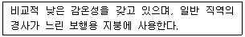
- 1종
- 2종
- 3종
- 4종
(정답률: 알수없음)
40. 폴리우레아 수지 도막 방수재의 인장 성능에서 파단 시 신장률의 품질기준은?
- 300%이상
- 400%이상
- 500%이상
- 600%이상
(정답률: 알수없음)
3과목: 방수시공
41. 부재의 접합부의 줄눈, 균열 등에 생기는 거동 또는 거종의 양을 의미하는 용어는?
- 무브먼트(Movement)
- 본드 브레이커(Bond Breaker)
- 워킹 조인트(Working joint)
- 논워킹 조인트(Non-Working joint)
(정답률: 55%)
42. 아스팔트 방수공사에서 보행용 전면접착 8층 방수(c종)의 층별 구성이 옳지 않은 것은?
- 1층: 아스팔트 프라이머
- 3층: 아스팔트 루핑
- 5층: 아스팔트
- 7층: 스트레칭 루핑
(정답률: 알수없음)
43. 옥상녹화 방수시공 시 재료의 선택 및 시공 시 유의사항으로 옳지 않은 것은?
- 바탕층의 거동에 의한 방수층의 파손방지를 위해 거동흡수 절연층을 구성한다.
- 체류수에 의한 방수층의 화학적 열화 방지를 위해 방수재위에 수밀 코팅 처리를 한다.
- 배수층 설치를 통한 체류수의 원활한 흐름을 위해 방수층 위에 플라스틱계 배수판을 설치한다.
- 조경 수목의 뿌리에 의한 방수층의 파손 방지를 위해 합성고분자계 보다는 아스팔트 시트계 방수재를 사용한다.
(정답률: 알수없음)
44. 개량 아스팔트시트 방수공사에서 보행용 전면접착의 표준적용 부위로서 적합하지 않은 곳은?
- PC 바탕 지붕
- PC 바탕 차양
- RC 바탕 실내 주차장
- RC 바탕 지하외벽(외부쪽)
(정답률: 알수없음)
45. 벤토나이트 방수공사에 사용되는 자재에 속하지 않는 것은?
- 벤토나이트 패널
- 벤토나이트 시트
- 벤토나이트 매트
- 벤토나이트 필름
(정답률: 알수없음)
46. 방수바탕의 형상에 관한 설명으로 옳지 않은 것은?
- 치켜 올림부의 콘크리트는 제물마감으로 한다.
- 오목모서리는 각이 없는 완만한 면처리로 한다.
- 치켜올림 끝부분에 설치되는 빗물막이 턱은 치켜 올림부 콘크리트와 일체로 하여 만든다.
- 바탕의 콘크리트 표면은 그라인더 등의 연마기, 샌딩블라스터 등으로 평활하고 깨끗하게 마무리 한다.
(정답률: 40%)
47. 개량 아스팔트시트 방수공사에서 일반부의 개량 아스팔트 방수시트의 폭방향 겹침폭은 최소 얼마 이상으로 하는가?
- 30mm
- 60mm
- 100mm
- 120mm
(정답률: 80%)
48. 폴리머 시멘트 모르타르의 비빔 및 사용가능한 시간에 관한 설명으로 옳은 것은?
- 폴리머 시멘트 모르타르의 비빔은 손비빔을 원칙으로 한다.
- 폴리머 시멘트 모르타르는 비빔 후, 20℃인 경우 1시간 이내로 사용한다.
- 비빔 전에 소정량의 폴리머 분산제와 시험비빔에 의하여 결정한 물을 잘 혼합하여 사용한다.
- 혼화재료, 시멘트, 모래, 순으로 믹서에 투입하고 전체가 균질하게 되도록 건비빔 한다.
(정답률: 30%)
49. 합성고분자계 시트 방수공사의 시트 붙이기에 관한 설명으로 옳지 않은 것은?
- 방수층의 치켜올림 끝부분은 누름철물로 고정한 다음 실리용 재료로 처리한다.
- 시트의 접합부는 원칙적으로 물매 아래쪽의 시트가 물매 위쪽 시트의 위에 오도록 겹친다.
- 합성고무계 전면접착 공법에서는 일반부 시트를 붙이기 전에 바탕의 오목모서리에 200×200mm 정도의 비가황 고무계 방수시트로 덧붙임 한다.
- 합성수지계 전면접착 공법에서의 ALC패널 단면 접합부에는 접착제를 바르기 전에 폭 50mm 정도의 절연용 테이프를 붙인다.
(정답률: 알수없음)
50. 도막 방수공사에서 방수재의 도포에 관한 설명으로 옳지 않은 것은?
- 방수재의 겹쳐 바르기 또는 이어 바르기의 폭은 100mm내외로 한다.
- 보강포 위에 도포하는 경우는 불침투 부분이 생기지 않도록 주의 한다.
- 방수재의 겹쳐 바르기는 원칙적으로 앞의 공정에서 칠 방향과 직교해서 실시한다.
- 고무아스팔트계 도막방수재의 지하외벽에 대한 뿜칠은 위에서부터 아래의 순서로 실시한다.
(정답률: 59%)
51. 방수공사용 아스팔트의 종류 중 1종의 표준 용융온도는?
- 150~160℃
- 220~230℃
- 280~290℃
- 210~320℃
(정답률: 알수없음)
52. 개량 아스팔트시트 방수공사에 관한 설명으로 옳지 않은 것은?
- 드레인 주변에는 50mm 각 정도의 덧 붙임용 시트를 사용한다.
- 파이프용 주변에는 덧 붙임용 시트를 적절하게 혼합하여 사용한다.
- 오목 모서리에는 미리 폭 200mm 정도의 덧 붙임용 시트를 붙여둔다.
- 실내에서 방수층의 치켜 올림 높이가 낮을 경우 누름 철물을 사용하지 않을 수 있다.
(정답률: 17%)
53. 규산질계 도포방수공사에서 도포방수재의 도포방법에 관한 설명으로 옳지 않은 것은?
- 방수재를 콘크리트면에 솔로 바를 경우에는 바름 방향이 일정하도록 한다.
- 앞 공정에서 도포한 방수재가 손가락으로 눌러 묻어나지 않는 상태가 되었을 때 다음 공정의 도포를 시작한다.
- 앞 공정의 도포 후 24시간 이상의 간격을 두고 다음 공정의 도포를 시작할 경우에는 물 뿌리기를 하지 않는다.
- 도포한 방수재가 완전히 건조하여 손가락으로 눌러 하얗게 묻어 나오거나 백화현상과 유사한 상태로 되었을 때는 방수층을 철거하고 재시공 한다.
(정답률: 37%)
54. 도막 방수공상서 도막방수층(지붕 및 외벽)을 자외선, 동결융해, 염해, 산성비 및 마모로부터 보호하기 위해 방수층 위에 도포하는 것은?
- 보강포
- 화장재
- 보호완충제
- 보호용 톱코팅재
(정답률: 알수없음)
55. 지하구체 외벽방수에서 시트계 방수재에 관한 설명으로 옳지 않은 것은?
- 시트 간 접합부의 수밀성 확보가 어렵다.
- 치밀성 등 재료 자체의 방수성이 우수하다.
- 코너부, 돌출부 등 굴곡부에서의 바탕면 추종성이 부족하다.
- 두께의 불균질, 핀홀 발생 등 방수층의 안전성이 크게 우려 된다.
(정답률: 알수없음)
56. 규산질계 도포방수공사에서 방수층의 적용부위와 방수층의 표준 위치의 연결이 옳지 않은 것은?
- 수조 : 수압축
- 바닥 : 수압축
- 외벽 : 수압축, 배수수압축
- 피트 : 수압축, 배후수압축
(정답률: 59%)
57. 방수공사에서 시멘트, 모래와 방수재 및 물을 혼합하여 반죽한 것은?
- 백업재
- 방수용액
- 방수 모르타르
- 방수 시멘트 페이스트
(정답률: 알수없음)
58. 방수공사에서 외벽에 적용되는 보호 및 마감의 표준은?
- 화장재
- 마감도료
- 현장타설 콘크리트
- 아스팔트 콘크리트
(정답률: 24%)
59. 다음은 방수바탕에 관한 설명이다. ( )안에 알맞은 것은?
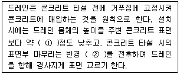
- ① 15mm,. ② 300mm
- ① 15mm, ② 500mm
- ① 30mm, ② 300mm
- ① 30mm, ② 500mm
(정답률: 42%)
60. 옥상녹화 방수공사에 관한 설명으로 옳지 않은 것은?
- 시멘트계 방수재는 내균열성 및 수밀성이 좋다.
- 도막방수재는 장기간 침수 시 분해현상이 발생될 수 있다.
- 합성고분자계 시트 방수는 조인트 처리에 대한 고려가 요구된다.
- 아스팔트계 시트 방수는 장기간 침수 시 아스팔트의 유화 현상이 발생 될 수 있다.
(정답률: 50%)
4과목: 방수유지관리
61. 방수하자 유형 중 방수층 파단에 관한 설명을 옳지 않은 것은?
- 도막계 방수재가 보강재 없이 시공된 경우 발생할 수 있다.
- 방수층 파단 방지에 시멘트계 방수재의 사용이 효과적이다.
- 콘크리트 구조물의 수축과 평창에 따라 방수층이 파괴되는 현상이다.
- 방수층이 바탕 콘크리트에 완전 밀착되어 시공된 경우 주로 발생한다.
(정답률: 39%)
62. 다음은 루프 드레인의 누수 시험에 관한 설명이다. ( )안에 알맞은 것은?
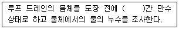
- 10분
- 30분
- 1시간 30분
- 2시간 30분
(정답률: 알수없음)
63. 도막 방수재의 경화 불량의 원인과 가장 거리가 먼 것은?
- 용제 과다 사용
- 주제의 과량 배합
- 주제와 경화제의 배합 불량
- 재료 배합 시 밑이 둥근 용기사용
(정답률: 알수없음)
64. 시설물 유지관리의 필요성과 가장 거리가 먼 것은?
- 보수비용 분담
- 재산 가치 보존
- 이상 징후 조기 발견
- 사용 가능 기간 연장
(정답률: 알수없음)
65. 누수 보수재료가 갖추어야 할 기본 조건과 가장 거리가 먼 것은?
- 재료의 흡수성이 높을 것
- 습윤 바탕면에서 부착 성능 발현이 가능할 것
- 물의 영향이 있을 시 화학 반응이 발행하지 않을 것
- 빠른 유속과 수압 작용 시 재료 물성 변화가 없을 것
(정답률: 알수없음)
66. 옥상방수층의 누수 원인과 가장 거리가 먼 것은?
- 보호 모르타르의 박락
- 부적절한 홈통 개수 및 구경 설계
- 옥상공작물 매입부의 방수시공 불량
- 시트 방수층의 경우 방수층 겹침 부위의 시공 불량
(정답률: 알수없음)
67. 도막계, 시트계 방수공사에서 방수층이 형성되는 과정 또는 형성된 후 바탕면에서 발생하는 부분이나 공기, 결로수 등의 팽창으로 발생하는 방수하자 유형은?
- 균열
- 오버랩
- 부풀음
- 물고임
(정답률: 70%)
68. 방수층이 표준내용 년수의 70%이상에 달한 경우로서 결함 상태의 평가항목이 60%이상에 해당하는 경우 조치사항으로 옳은 것은?
- 계속적인 관찰이 필요함
- 전면보수를 원칙으로 함
- 부분보수를 원칙으로 함
- 전면보수인지 부분보수인지를 검토함
(정답률: 알수없음)
69. 다음 설명에 알맞은 방수하자 유형은?
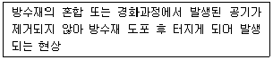
- 핀홀
- 들뜸
- 용해
- 화학적 침식
(정답률: 60%)
70. 개구부 주위에서 발생하는 누수의 원인과 가장 거리가 먼 것은?
- 콘크리트 인방 설치
- 새시 선대부의 패킹 고무의 불량
- 채움 모르트라 불량 또는 충진 부족
- 개구부 주위에서 발생한 사면균열
(정답률: 70%)
71. 평면부의 방수 점검부위에 속하지 않는 것은?
- 식물번식
- 솟아오름
- 누름층의 균열
- 드레인의 파손
(정답률: 47%)
72. 개구부 주위 누수 보수 후 누수 확인을 위해 실시하는 시험은?
- 만수시험
- 담수시험
- 살수시험
- 연기시험
(정답률: 64%)
73. 합성고분자 시트방수 보수공사에서 접착제 도포에 관한 설명으로 옳지 않은 것은?
- 접착제는 솔, 롤러 등을 사용하여 균일하게 도포한다.
- 접착제의 도포에 앞서 먼저 도포한 프라이머의 적정한 건조를 확인한다.
- 접착형 방수시트를 사용하는 공사에서는 반드시 접착제 도포 후 시트를 붙여야 한다.
- 접착제의 도포범위는 접착 유효시간 내에 시트 부착 작업이 가능한 범위내로 한다.
(정답률: 50%)
74. 다음 중 일상적인 유지관리 업무의 방수결함상태 점검 시 가장 먼저 점검하는 부분은?
- 드래인 주의
- 평면부 방수층
- 접합부 마감상태
- 파라펫의 선단부분
(정답률: 55%)
75. 우레탄 도막방수 보수공사에서 다음과 같은 작업이 실시되는 공정은?
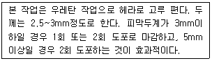
- 면처리
- 하도
- 중도
- 상도
(정답률: 30%)
76. 다음은 옥상녹화 방수의 누수 방지를 위한 관리 방법에 관한 설명이다. ( )안에 공통으로 들어가는 용어는?
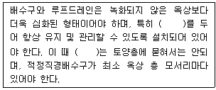
- 공동구
- 점검구
- 청소구
- 오버 플로우
(정답률: 50%)
77. 유지관리의 기본 지침에 관한 설명으로 옳지 않은 것은?
- 구조물의 결함에 대한 효율적인 보수작업 계획 수립
- 구조물의 특이한 점검, 보수작업 위주로만 기록 및 보관
- 사전계획에 의한 불필요한 유지관리 및 보수비용 절감
- 결함 발견 시 정확한 진행 여부 파악 및 발생 시기 판단
(정답률: 64%)
78. 지하구체 외면방수재료가 시공품질 안정성과 관련하여 갖추어야 하는 요건에 속하지 않는 것은?
- 공정의 단순성 확보
- 구성 소재간의 일체성 확보
- 코너 부위 등 협소 공간에서의 수밀성 확보
- 바탕 형상에 대한 구조물 거동 대응성 확보
(정답률: 알수없음)
79. 옥상 방수층 들뜸의 발생 원인과 가장 거리가 먼 것은?
- 바탕의 청소불량
- 옥상 방수층의 구배 불량
- 경년변화에 따라 방수층 접착계면과의 접착력 감소
- 우레탄 도막방수의 경우 메시류(보강포(의 접착 및 누름 부족
(정답률: 40%)
80. 실링재의 열화 요인과 가장 거리가 먼 것은?
- 기상조건
- 조인트 변동
- 피로현상
- 알칼리 반응
(정답률: 알수없음)